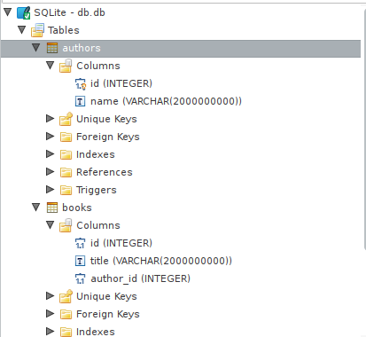
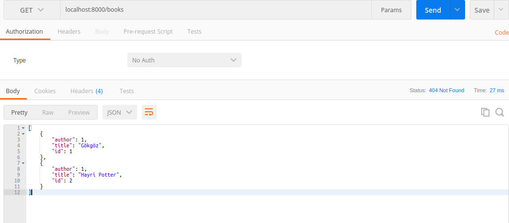
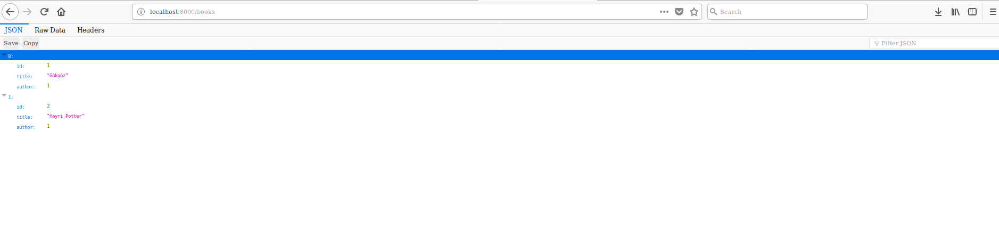

Hug ve SQLAlchemy ile Basit API Yapımı
Written on
Selam,
Geçenlerde yazı yazdıktan sonra Mirat Can Bayrak dedi ki hug ile ilgili birşeyler yazsana. Meğer kendisi üşenmiş. Neyse hug'a gelelim.
Google'da hug diye arattığınızda bulamayabilirsiniz. I need hug.
Hug'a erişmek için:
Hug Nedir ?
Hug falcon altyapısını kullanan bir rest api frameworkü. Peki bize ne vaad ediyor bu hug?

Gördüğünüz gibi kendisi falcon,pycnic den sonra 3.sırada gelmekte. Yani bize hız vaad etmektedir. Bundan sonra ki yazıda pycnic üzerine mi olsa acaba?
Neden Hug ?
Normalde ben API veya Web Application yazacaksam ( görende çok yazdım sanacak ) genelde bunu Flask ile yazmaktayım. Çünkü Flask de djangoya nazaran daha özgürsünüz ve Django'nun o katı iskelet yapısı vs. yok. Peki Flask yerine neden hug ? Vallahi onu bende bilmiyorum. Ama yazmak hoşuma cidden hoşuma gitti. Çünkü direkt olarak Cli toollar bile yazabiliyorsunuz. Ayrıca Flaskde ki gibi Flask = app() gibi standart sözdizimleri bulunmamakta.
Hadi Başlayalım
Peki ne yapacağız hug ile ? Ben gerçekten blog scripti yazmak isterdim fakat gerek yurtdışına çıkmam gerek gevşekliğim sebebiyle geçen hafta açtığım repoya henüz yeni pushladım kodları. Gerisini siz düşünün. O yüzden bende basit bir Kitap-Yazar scripti yapmaya çalıştım.
Evet başlayalım. Öncelikle kodlara ulaşmak için Tıklayınız
Iskelet Yapımız
- Main dosyamız
- main.py
- Modellerimizi yazdığımız bir dosya
- models.py
- Model Şemalarımızın bir dosyası
- schemas.py
Burada genelde bütün kodlarımızı main.py içerisinde yazacağız. Models.py ve Schemas.py dosyalarımıza sadece 1 kere dokunacağız daha sonra sabit kalacaklar.
Modellerimizi Oluşturalım
Kitap-Yazar projemizde düşündüğümüzde ne gibi modellerimiz olur ?
- Kitap
- Yazar
Tabi siz bunları Tür,Yayıncı vs olarak çoğaltabilirsiniz. Amaç mantığı anlamak.
Kodlara geçelim.
import sqlalchemy as sa
from sqlalchemy.ext.declarative import declarative_base
from sqlalchemy.orm import scoped_session, sessionmaker, relationship, backref
engine = sa.create_engine('sqlite:///db.db')
session = scoped_session(sessionmaker(bind=engine))
Base = declarative_base()
class Author(Base):
__tablename__ = 'authors'
id = sa.Column(sa.Integer, primary_key=True)
name = sa.Column(sa.String)
def __repr__(self):
return '<Author(name={self.name!r})>'.format(self=self)
class Book(Base):
__tablename__ = 'books'
id = sa.Column(sa.Integer, primary_key=True)
title = sa.Column(sa.String)
author_id = sa.Column(sa.Integer, sa.ForeignKey('authors.id'))
author = relationship("Author", backref=backref('books'))
Base.metadata.create_all(engine)
Modüllerimizi, fonksiyonlarını impor ettik bu kısmı hızlı geçiyorum.
Şimdi burada engine değişkenine bizim hangi database'i kullanacağımızı belirtmemiz gerekmekte.
Ben burada sqlite belirttim fakat sizler Postgresql gibi bir çok database belirtebilirsiniz. Onlarında connection_uri'leri genelde benzerdir. Mesela postgresql connection_uri:
postgresql://username@password:db
gibidir. ( Yanlış hatırlamıyorsam. )
session değişkenine orm için kullanacağımız bind'ı koyuyoruz. Neden böyle yapıyoruz bilmiyorum benimde ezberimden gidiyor bu olay. Aynı şekilde base değişkenini de ezberden kullanıyorum.
Author Modeli
Burada bir class içerisinde Author modelimizi belirleyip buna argüman olarak Base değişkenini veriyoruz.
Tablename isminden de anlaşılacağı gibi.
id kısmında bunun bir Column olacağını ve Integer tipinde olacağını ve auto_increment olacağını söylüyoruz.( Primary Key )
name sütununda ise bunun bir string sütunu olacağını ve sınırsız oldugunu söylüyoruz. Buraya güvenlik için sa.String(50) yazabilirsiniz.
Book Modeli
Burada da yapı yine aynı şekilde fakat en aşağıda author değişkenini görmektesiniz. Burada database motorumuza bunun Foreign key olacağını yani ( Relational ) ilişkisel olacağını söylüyoruz. Bu ilişkisini Author class'ı ile kuruyoruz.
En aşağıda ise tablolarımızı oluşturuyoruz.

Schema Dosyamız
Burada asıl amacımız bu modeller çağrıldığında modellerin içinde ki tüm alanları şema olarak bize geri döndürmesidir.
from marshmallow_sqlalchemy import ModelSchema
from models import Author,Book
class BookSchema(ModelSchema):
class Meta:
model = Book
class AuthorSchema(ModelSchema):
class Meta:
model = Author
Burada iki şemamıza da hangi modeli baz alacağını gösteriyoruz.
Gelelim zurnanın zırt dediği yere.
Main Dosyamız
Hemen kodları yapıştırıp açıklamayı kodların üstünde yapacağım.
#-*- coding:utf-8 -*-
import sqlalchemy as sa
from sqlalchemy.orm import sessionmaker
from models import Author,Book,Base # Modellerimizi import ediyoruz.
from schemas import AuthorSchema,BookSchema #Şemalarımızı import ediyoruz.
import hug # Hug Olmazsa olmazımız
from falcon import * # Yıldız ile import etmeyin siz. HTTP Status Codelar için import ettim.
engine = sa.create_engine('sqlite:///db.db') # Database Engine belirttik.
Base.metadata.bind = engine
DBSession = sessionmaker(bind=engine)
session= DBSession()
@hug.get('/books') # /books/ adresine get isteği yapıldığında aşağısı çalışsın diyoruz.
def getbooks(response):
books = session.query(Book).all() # ORM olarak bütün Book tablosunu alıyoruz.
bookschema = BookSchema(many=True) # Buradan da Book şemamızı alıyoruz.
data = bookschema.dump(books).data # Book şemamızı book tablosu ile bağdaştırıp dataları alıyoruz.
response.status = HTTP_404 # 404 Döndürüyoruz. Açıklayacağım.
return data #Datamızı Döndürüyoruz.
@hug.post('/books') # /books/ adresine post isteği yapıldığında aşağısını çalıştır babuş.
def addbooks(body,response): # body isteğin body'sini belirtir.
authorid = body['author_id'] # body içerisinde ki author_id yi değişkene atadım.
bookname = body['bookname'] # body içerisinde ki bookname'i değişkene atadım.
try:
bookname, authorid = bookname.decode(), authorid.decode()
checkauthor = session.query(Author).filter_by(id=authorid).first() # gelen id'ye sahip yazar var mı kontrol ediyorum.
print(checkauthor) # kontrol için koydum.
if checkauthor == None:
response.status = HTTP_404 # Eğer yazar yoksa 404 döndür diyorum.
return HTTP_404
else:
book = Book(title=bookname,author_id=authorid) # ID'ye ait yazar var ise kitabı oluşturacak olan ORM'yi hazırlıyoruz.
session.add(book) # Bunu session değişkeni ile database e gönderiyoruz.
session.commit() # Database'e yazıyoruz.
response.status = HTTP_200 #200 döndürüyoruz.
return falcon.HTTP_200 # response body 200 döndürüyoruz.
except TypeError:
response.status = HTTP_404
return falcon.HTTP_404
@hug.post('/authors')
def addauthors(body,response):
session.rollback()
author_name = body['author_name']
author = Author(name=author_name)
session.add(author)
session.commit()
response.status = HTTP_202
return falcon.HTTP_202
@hug.get('/authors')
def getauthors():
authors = session.query(Author).all()
authorschema = AuthorSchema(many=True)
data = authorschema.dumps(authors).data
return data
Gerisini yazmadım zaten gerisi birbirini tekrar ediyor.
Şimdi burada açıklamam gereken şey eğer aşağıda ki gibi yaparsanız.
return HTTP_200
return olarak sayfa 200 dönecektir. Ayrıca response body olarak da 200 dönecektir.
return HTTP_404
yaptığımızda ise response body olarak 404 dönecek fakat istek 200 dönecektir. Gerçekte böyle birşey görürseniz ne olur ? WTF bu developer kafayı yemiş dersiniz.
İşte o yüzden bazı route'larda response.status olarak HTTP status code'unu değiştirdim ki yukarıda ki gibi bir durum olmasın diye.

response.status = HTTP_404 # 404 Döndürüyoruz. Açıklayacağım.
return data #Datamızı Döndürüyoruz.
Bilerek gözünüze takılsın diye böyle yazdım yani.
Evet şimdi istek yapalım.

Tataa direk olarak Şemalarımız sayesinde bize geri dönen veri JSON olarak geri döndü.
İşin özetine gelirsek aslında yapacağınız uygulamalar bundan da farklı değil. Biraz daha database işlemleri karmaşıklaşıyor vs.vs
Neyse basit bir şekilde API yapımı bu kadar.
Teşekkürler okuduğunuz için.